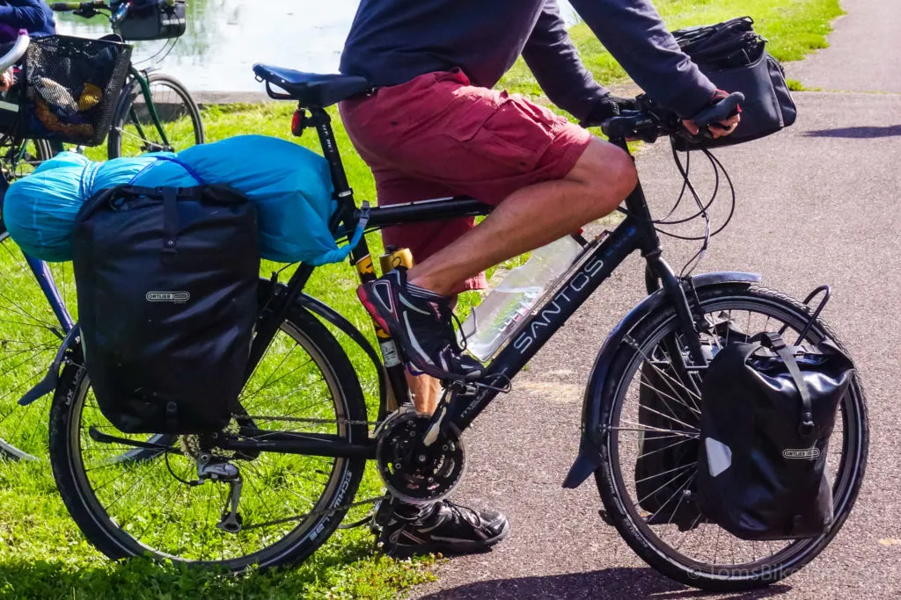

road cycling.
Road cyclists often ride small, narrow-tired bicycles that are built for efficiency and speed on smooth,
flat terrain. With their drop handlebars, these bikes can be ridden in a more aerodynamic stance and with a
variety of hand positions.Road cycling is a very competitive sport, with competitions ranging from regional
club races to major international events like the Tour de France. But, it may also be enjoyed more slowly,
with lots of cyclists partaking in leisurely solo rides, group rides, and charity events.
There are also Different types of Road Cycling like the following:
- Road Racing
- Time Trial
- Commuting
- Touring Scroll to see Pictures:

TIME TRIAL

BIKE COMMUTING
BIKE TOURING
